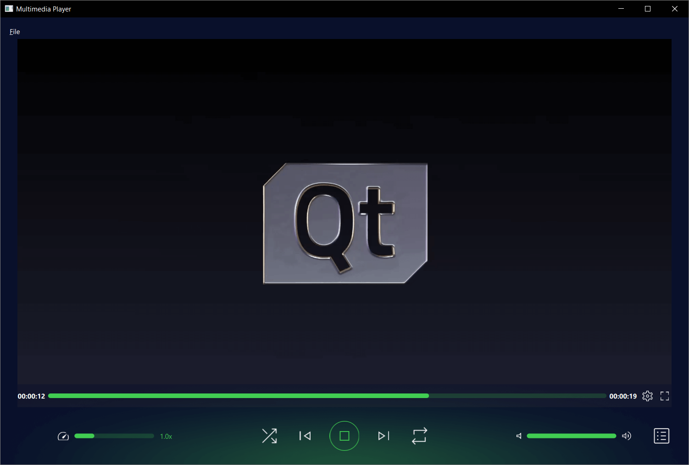

Media Player Example
Playing audio and video using Qt Quick.

This example demonstrates a simple multimedia player that can play audio and video files using various codecs.
Running the Example
To run the example from Qt Creator, open the Welcome mode and select the example from Examples. For more information, visit Building and Running an Example.
Overview
At its core this is a QML application, see Getting Started Programming with Qt Quick for information specific to that. This documentation is focused on how this example utilizes the Qt Multimedia QML Types.